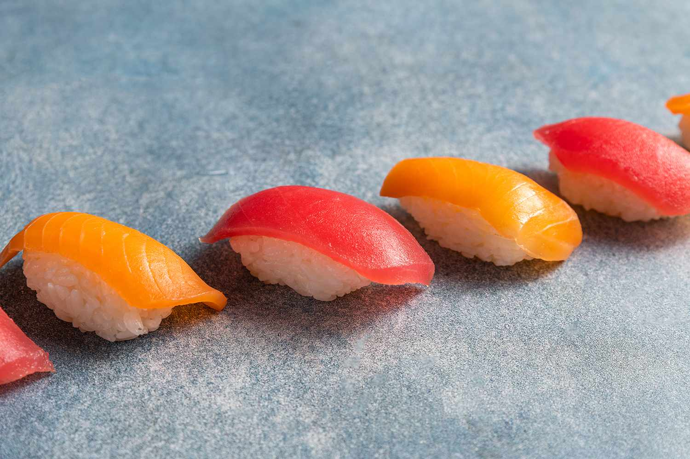

How to Make Nigiri
Home

Description
Nigiri is a traditional Japanese sushi type consisting of a small,
hand-pressed oval mound of vinegared short-grain rice (called shari)
topped with a single slice of raw, cooked, or seared seafood or other
ingredient (called neta).
Ingredients
Sashimi-Grade Salmon or Tuna
Steps
Wash the sushi rice under cold water until water runs clear.
Cook the rice with water in a rice cooker.
In a small bowl, mix the rice vinegar, sugar, and salt. Fold the mixture
gently into the warm rice while fanning it lightly to cool it down to
room temperature. Keep it covered with a damp cloth.
Use a sharp, long blade to slice the chilled, sashimi-grade fish against
the grain into thin, uniform pieces (about 1/8 to 1/4-inch thick). Angle
the knife slightly (around 45 degrees) as you slice.
Dip your hands in a bowl of water (or vinegared water) so the rice does
not stick.
Take about 1 to 1.5 tablespoons (roughly 15g to 25g) of sushi rice and
gently shape it into a small oblong or oval mound using your cupped palm
and fingers.
Dab a tiny bit of wasabi onto the center of the fish slice (or directly
onto the top of the rice mound). Place the fish slice over the rice and
press lightly with your fingers to secure and contour the shape.
Serve the nigiri immediately alongside pickled ginger and soy sauce for
dipping.